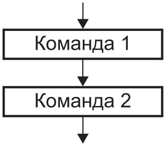

Алгоритмические конструкции
Как вам уже известно из курса информатики, любой алгоритм может быть
записан с использованием трех базовых алгоритмических конструкций: следование,цикл и ветвление .
Команды, составляющие алгоритмическую конструкцию следование, выполняются последовательно,
друг за другом, в том порядке, в котором они записаны ниже.
Команды цикла и ветвления управляют порядком
выполнения других команд в программе и относятся к командам управления.
Алгоритмическая конструкция ветвления обеспечивает выполнение одной или другой последовательности
команд в зависимости от истинности или ложности некоторого условия. Оператор ветвления — команда,
реализующая алгоритмическую конструкцию ветвления на языке программирования(См. картинку ниже).
Алгоритмическая конструкция повторение (цикл) представляет собой последовательность действий,
выполняемых многократно. Саму последовательность называют телом цикла. Оператор цикла — это команда,
реализующая алгоритмическую конструкцию повторения на языке программирования.
Существуют разные возможности управлять тем, сколько раз будет повторяться тело цикла.
Может быть задано условие продолжения или окончания работы цикла, а также число повторений тела цикла.
Выделяют следующие циклы: цикл с предусловием, цикл с постусловием и цикл с параметром. Выбор цикла
зависит от задачи. Во многих случаях циклы взаимозаменяемы. При выборе цикла можно ориентироваться на следующее:
- цикл с параметром используется тогда, когда известно количество повторений;
- цикл с предусловием используется в том случае, когда известно условие продолжения работы;
- цикл с постусловием используется тогда, когда тело цикла должно быть выполнено хотя бы один раз.